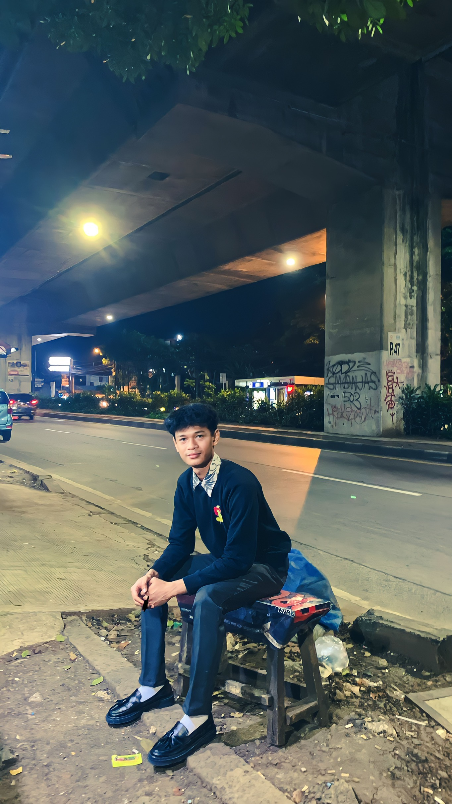

X5D
KENALI SAYA
Saya adalah mahasiswa Teknik Informatika yang tertarik mengembangkan kemampuan di bidang teknologi. Saya memiliki pengalaman menangani perawatan komputer dan laptop, instalasi sistem operasi, penggantian komponen, serta pemecahan masalah perangkat keras dan perangkat lunak.
KEMAMPUAN
Membuat struktur dasar halaman website.
Mengatur tampilan, warna, layout, dan responsivitas website.
Membuat interaksi sederhana pada halaman website.
Memahami RAM, SSD, baterai, LCD, dan komponen komputer.
Instalasi Windows, aplikasi, dan troubleshooting.
Memahami dasar jaringan komputer dan konfigurasi sederhana.
PENGALAMAN KERJA
Bekerja sebagai teknisi di Infonet, melakukan pemeriksaan dan perbaikan komputer maupun laptop. Melakukan penggantian komponen laptop seperti RAM, SSD, baterai, LCD, keyboard, dan motherboard.
Melakukan pengelasan pada logam dan baja, dengan hasil presisi dan kuat
HUBUNGI SAYA
Terima kasih sudah mengunjungi website portofolio saya.
Kirim Email